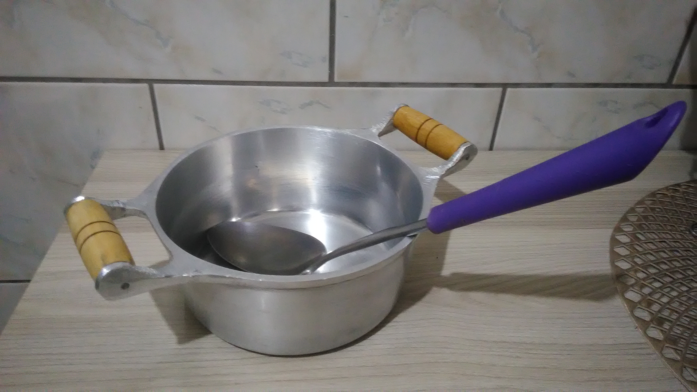
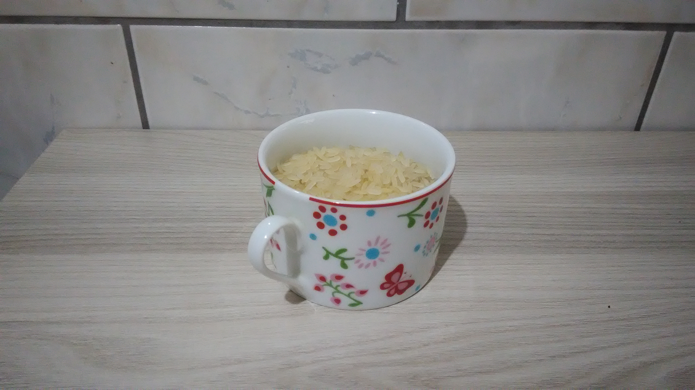
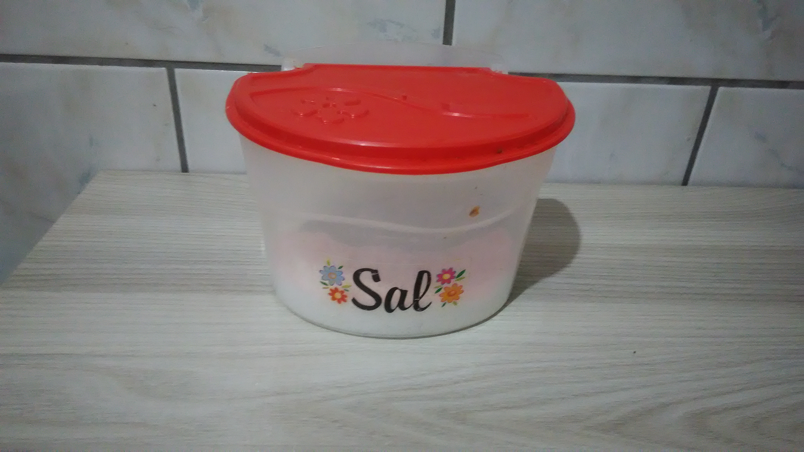
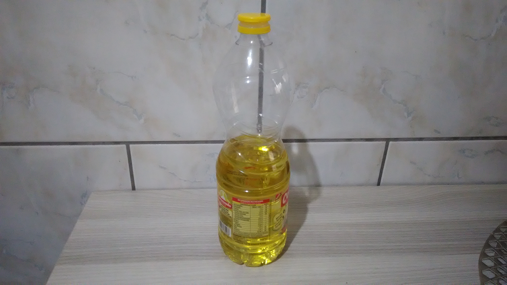
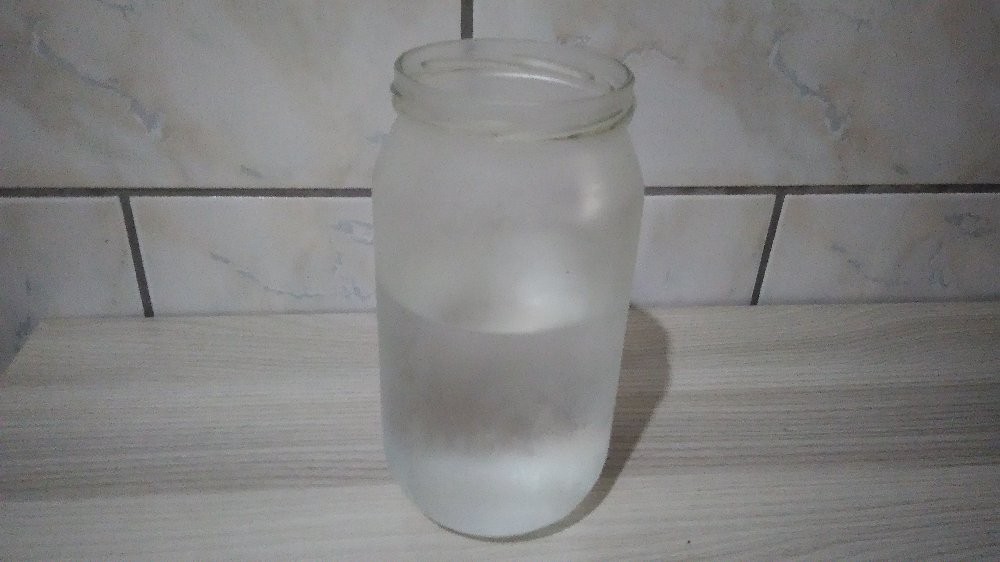

Coisas que prescisamos ter em mãos para fazer nosso arroz:
Ferramentas:
- Colher grande;
- Panela, tamanho de acordo com a quantia a ser feita;
- Fogão a gaz ou a lenha.

Ingredientes:
- Arroz;

- Óleo ou banha;

- Sal;

- Água;

Link para voltar para a tela inicial:
Tela incicial com o modo de preaparo.